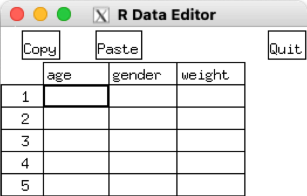

第 2 章 数据基础
2.1 数据类型
2.1.2 六种常见的数据类型
R语言中常见的数据类型有6种：
| 数据类型 | 示例 | 验证代码 | 输出结果 |
|---|---|---|---|
| 数值型（numeric） | 5，10.5，999，2.3e-10（科学计数法） | x <- 100;class(x) |
[1] "numeric" |
| 整数型（integer） | 2L，34L，0L | x <- 2L;class(x) |
[1] "integer" |
| 字符型（character） | ‘a’ , ‘“good”, “TRUE”, ’100’ | x <- "TRUE";class(x) |
[1] "character" |
| 逻辑型（logical） | TRUE, FALSE | x <- TRUE;class(x) |
[1] "logical" |
| 复数型（complex） | 3 + 2i | x <- 3+2i;class(x) |
[1] "complex" |
| 原始型（raw） | “Hello”存储值为:48 65 6c 6c 6f | x <- charToRaw("Hello");class(x) |
[1] "raw" |
2.2 控制语句
编程语言最基本也是最常见的三种控制结构分别是顺序、分支和循环结构。在R语言中，顺序结构通过代码的前后顺序直接决定，而分支结构和循环结构就需要对应的控制语句来实现。
其中关于分支结构，R中最常见的分支控制语句就是if……else，用于对逻辑语句进行判断，从而决定执行不同的代码，实现逻辑分支。逻辑语句中最常见的形式就是比较，比如等于(=)，不等于(!=)，大于(>)，大于等于(>=)，小于()<
，小于等于(<=)。if……else中对应逻辑条件下的业务代码都需要放置于{}中，而且else必须和if条件分支对应的右花括号处于一行，否则将导致程序出现无法识别的错误。R语言可以通过ifelse()对分支语句进行简化，比如可以对下表中的if……else语句简化化为: ifelse(i>3, print("Yes"), print("No"))。此外，ifelse()可以实现向量化，比如通过结合transform()函数对数据框中的每一个元素进行判别运算从而生成新列。
R中对循环逻辑的控制语句包括两种，最常用的一种是for循环，如下表所示，该循环的每次执行可以取出循环向量中的每一个元素，并执行花括号中的语句，直到所有的元素都取完为止。其中循环的向量不局限于连续型向量，还可以选择其他任意向量。另外一种循环是while循环，其通过设置一个判定条件，每次执行完循环体中的语句后都通过判断此条件来决定是否执行下一次循环，这种循环容易因条件设置不当而陷入“死循环”。R语言为循环逻辑的控制还提供了break语句和next语句，它们只能够用于循环结构中，其中break语句代表退出循环体，next语句代表跳过本次循环，直接进行下一次循环(的条件判断)。

2.3 数据导入与导出
2.3.1 数据导入
R中可导入各种数据源的数据，包括键盘、文本文件、Excel和Access、统计软件、数据库管理系统、专业数据库、网站和在线服务等。下面介绍几种常用的导入方式。
2.3.1.1 使用键盘输入数据
使用edit()函数会自动调用一个允许手动输入数据的文本编辑器。具体步骤如下：
创建一个空数据框（或矩阵），其中变量名和变量的模式需与理想中的最终数据集一致；
针对这个数据对象调用文本编辑器（如下图），输入你的数据，并将结果保存回此对象中。
mydata <- data.frame(age=numeric(0),gender=character(0),weight=numeric(0))
mydata <- edit(mydata)
需要特别注意的是，如果您的操作系统为macOS，需要前往https://www.xquartz.org/手动下载安装XQuartz，才能正常调用edit()函数。
2.3.1.2 读取Excel数据
R虽然可以导入SPSS、SAS和Stata软件的数据，但是最好的数据导入方法还是导入经过初步处理的原始数据，而不是导入可能经过另一种统计软件处理过的数据。
读取Excel数据可以使用read.xlsx()函数，但最好的方式则是将Excel转化为csv，然后将csv数据导入到R中。
Excel数据一般为.xlsx和.xls格式，可以通过文件-另存为-保存类型-选择保存为csv文件，然后将csv文件复制到R工作目录中去。
下面讲解怎么从csv文件中读取数据。
2.3.1.2.1 方法一：read.table()函数
可以使用read.table()函数将带分隔符的文本文件中导入R中。
read.table(file, header = FALSE,sep = "", quote = "\"'",
dec = ".", numerals = c("allow.loss", "warn.loss", "no.loss"),
row.names, col.names, as.is = !stringsAsFactors,
na.strings = "NA",colClasses = NA, nrows = -1,
skip = 0, check.names = TRUE, fill = !blank.lines.skip,
strip.white = FALSE, blank.lines.skip = TRUE,
comment.char = "#",allowEscapes = FALSE, flush = FALSE,
stringsAsFactors = default.stringsAsFactors(),
fileEncoding = "", encoding = "unknown", text, skipNul = FALSE)部分参数释义:
file# 要读取的数据文件名(将文件名包含在”“内)。如果数据文件不在R工作目录里，需要使用全路径，所以建议放在工作目录中。header# 逻辑值；数据文件的第一行是否为变量名；sep# 分开数据的分隔符；默认为空白”“。
使用
sep=","则读取用逗号分隔行内数据的文件；使用
sep="\t"则读取用制表符分割行内数据的文件。
quote# 指定用于包围字符型数据的字符，默认双引号(““)或单引号(’’)dec# 用来表示小数点的符号。row.names# 指定行名的向量，或文件中一个变量的序号或名字,默认行号取为1, 2, 3…,col.names# 如果数据文件的第一行不包括变量名(header=FASLE)，则可以用col.names去指定一个包含变量名的字符向量。如果header=FALSE以及col.names选项被省略了，则变量分别命名为V1、V2、V3…as.is# 逻辑词；为FALSE，则将字符型变量转为因子型变量，为TRUE，则仍将其保留为字符型（TRUE）。也可以是逻辑型、数字型、或字符向量用来指定哪些列不需要转化为因子。na.strings# 表示缺失值的字符向量。如na.strings=c("-9","?")，表示在读取数据时，会把-9和?值转换成NA。colClasses# 指定各列变量数据类型的一个字符型向量。如colClasses=c("numeric","numeric","character","NULL","numeric")，前两列读取为数值型，第三列读取为字符型，跳过第四列，第五列读取为数值型。如果数据有多余五列，colClasses的值会被循环。在读取大型文本文件时，指定colClasses参数可以提升处理速度。nrows# 可以读取的最大行数(忽略负值)。skip# 在读取数据前跳过的行数。check.names# 如果为TRUE，则检查变量名是否在R中有效。fill# 某些情况下，文件中各行的长度不相等，这个参数是个逻辑词，设置read.table在某些值缺失的情况下，是否自动添加空白值。strip.white# 在sep指定情况下，为TRUE，则删除字符型变量前后多余空格。stringsAsFactors# 逻辑词，标记处字符向量是否需要转化成因子。默认值是TRUE，除非它被colClases所覆盖。在处理大型文本文件时，设置成stringsAsFactors=FALSE可以提升处理速度。text# 一个指定文字进行处理的字符串。如果text被设置了，file应该被留空。blank.lines.skip# 逻辑词；为TRUE，忽略空白行。comment.char# 默认情况下，comment.char把符号”#“后的任何文字当作注释；可以改变comment.char = "符号"来改变注释字符；如果数据中不包括任何注释，设置comment.char=""可以加快读取速度。flush# 逻辑词；在所有字段都已读入的情况下，是否应该跳到下一行。allowEscapes# 逻辑词；设置是否使用转义符(如”“表示转一行)，还是直接读入。encoding# 源文件的编码格式
2.3.1.2.2 方法二：read.csv()函数和read.csv2()函数
read.csv()函数和read.csv2()函数是read.table()函数的两种变形，这两个函数除了默认值与read.table()不同以外，其他的用法与read.table()完全相同。
两个函数的用法：
read.csv(file, header = TRUE, sep = ",", quote = "\"",
dec = ".", fill = TRUE, comment.char = "", ...)
read.csv2(file, header = TRUE, sep = ";", quote = "\"",
dec = ",", fill = TRUE, comment.char = "", ...) 从调用格式可看出，与read.table()不同，这两个函数默认参数都是header=TRUE。
3个函数的差别:
read.table()函数：读取数据的分隔符为空格，小数点用点号”.”；read.csv()函数：读取数据的分隔符为逗号，小数点用点号”.”；read.csv2()函数：读取数据的分隔符为分号，小数点用逗号”,“。
2.3.1.3 读取SPSS数据
foreign包中的read.spss()函数和Hmisc包中的spss.get()函数都可以导入SPSS数据，spss.get()是对read.spss()的一个封装，可以自动设置后者的许多参数，让整个转换过程更加简单一致。
foreign包是基础包，默认安装，需要手动安装一下Hmisc包
2.3.1.3.1 read.spss()函数
read.spss(file, use.value.labels = TRUE, to.data.frame = FALSE,
max.value.labels = Inf, trim.factor.names = FALSE,
trim_values = TRUE, reencode = NA, use.missings = to.data.frame,
sub = ".", add.undeclared.levels = c("sort", "append", "no"),
duplicated.value.labels = c("append", "condense"),
duplicated.value.labels.infix = "_duplicated_", ...)部分参数释义:
file# 要读取的sav数据格式(将文件名包含在”“内)；如果文件不在工作目录，可能需要写入全部文件路径。use.value.labels逻辑词；默认为TRUE，表示将带有值标签的变量转换为R中的因子；为FALSE，则不转化为因子。to.data.frame# 逻辑词；默认为FALSE，将数据读入到列表中；为TRUE，则将数据读入到数据框中。
2.3.1.3.2 spss.get()函数
spss.get(file, lowernames=FALSE, datevars = NULL,
use.value.labels = TRUE, to.data.frame = TRUE,
max.value.labels = Inf, force.single=TRUE,
allow=NULL, charfactor=FALSE, reencode = NA)部分参数释义:
file# 要读取的sav数据格式(将文件名包含在”“内)；也可以是网络上的数据文件，以”http:/"或"https://"格式表示；lowernames# 逻辑词；为TRUE时将变量名称转换为小写；datevars# 一个向量；指定哪些变量需要转换为R内部日期格式；use.value.labels# 逻辑词；默认TRUE，表示将带有值标签的变量转换为R中的因子；为FALSE，则不转化为因子。to.data.frame# 逻辑词；默认为FALSE，将数据读入到列表中；为TRUE，则将数据读入到数据框中。allow# 字符向量，默认情况下，变量名称中的下划线”_“将转换为点”.”。
2.3.2 数据导出
R可以将R数据对象(通常是数据框或矩阵)导出到文本文件。常用的函数为write.table()函数
write.table(x, file = "", append = FALSE, quote = TRUE, sep = " ",
eol = "\n", na = "NA", dec = ".", row.names = TRUE,
col.names = TRUE, qmethod = c("escape", "double"),
fileEncoding = "")部分参数释义：
x# 要导出的R中的对象file# 字符值，要导出的R对象的文件名称append# 逻辑词；为TRUE则将输出数据添加到现有文件的结尾；为FALSE则覆盖这个文件quote# 逻辑词，默认为TRUE，表示将字符或因子值放入引号中；或为数值向量，指定哪些变量应该放在引号中sep# 字符值，设置一行中分隔值的字符eol# 字符值，设置放置在每行结尾处的字符na# 表示缺失值NA的字符dec# 表示小数点的字符row.names# 逻辑词，默认为TRUE，设置输出中是否应该包括行名称；或数值向量，设置哪些行的名称应该输出col.names# 逻辑词，默认为TRUE，设置输出中是否应该包括列名称；或字符向量，设置列名称qmethod# 设置如何处理引用字符和因子字段中的引号。"escape"表示用反斜杠转义引号；double表示将引号转义为双引号(即把”转换成”“)